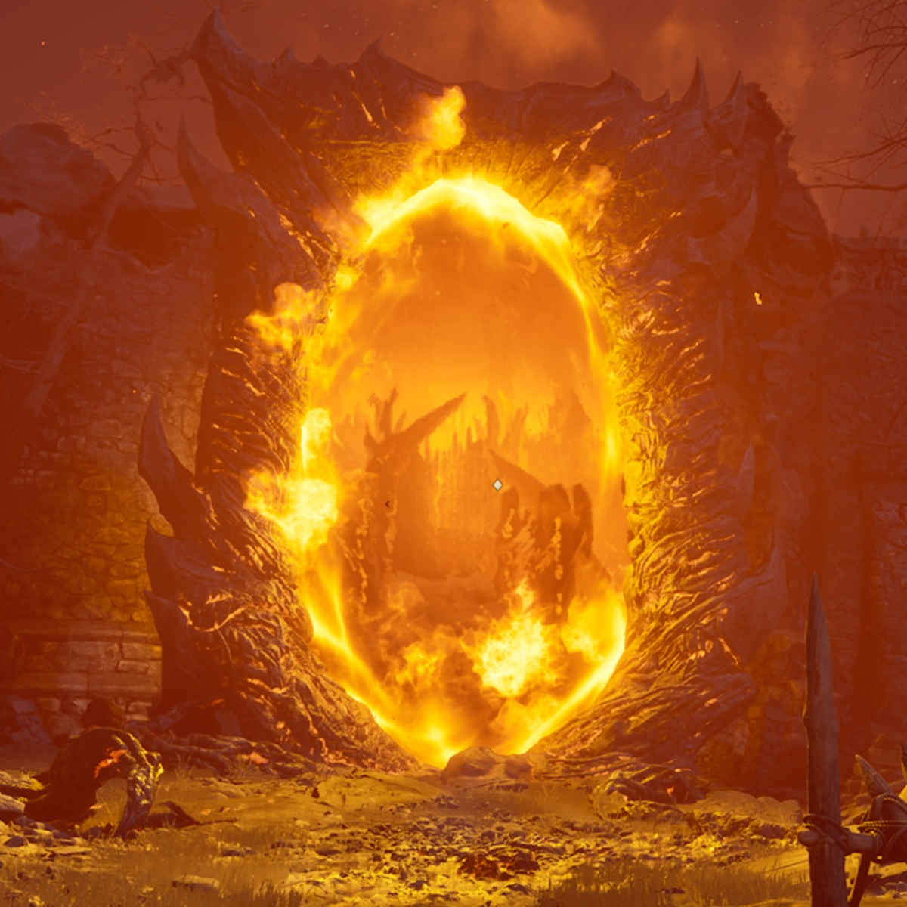
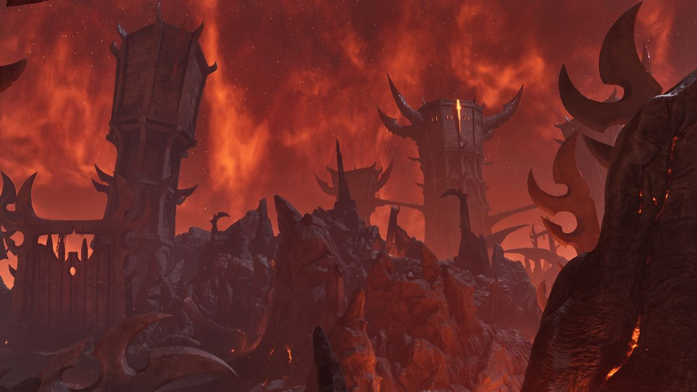

Closing Oblivion Gates
Enter hellish realms and shut down Daedric invasions.
Step into a world on the brink of destruction.
Follow the rise of a hero and the fall of an empire.

Enter hellish realms and shut down Daedric invasions.

One of the first major battles against Oblivion forces.

The fate of Tamriel rests on one final act.
Some of the most memorable adventures beyond the main story.
Join a secret guild of assassins and carry out deadly contracts.
A unique quest where you must eliminate targets in a mansion without being discovered.
Help the Daedric Prince of Madness unleash chaos in a small village.